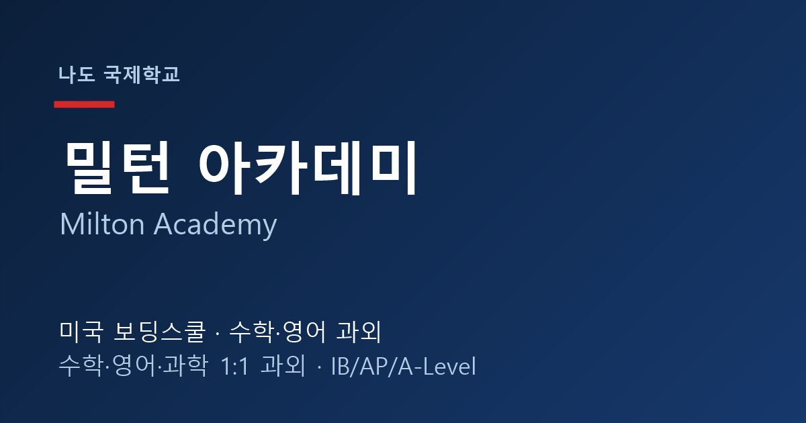

밀턴 아카데미(Milton Academy)는 미국 매사추세츠주 보스턴 인근 밀턴에 위치한 명문 사립 보딩스쿨입니다. 1798년에 설립된 오랜 전통의 학교로, "Dare to be true"라는 교훈 아래 학문적 깊이와 인성 교육을 함께 강조하는 것으로 잘 알려져 있습니다. 오늘은 밀턴 아카데미를 목표로 하거나 재학 중인 한국 학생·학부모님을 위해 학교의 특징과 준비 방법을 정리해 드립니다.
학교 특징
밀턴 아카데미는 미국 동북부 명문 보딩스쿨 중에서도 토론과 글쓰기 중심의 수업으로 유명합니다. 학급 규모가 작아 학생 한 명 한 명이 수업에서 발표하고 토론에 참여해야 하며, 인문학뿐 아니라 수학·과학에서도 개념을 스스로 설명하는 능력을 요구합니다. 다양한 AP 및 심화 과목이 개설되어 있고, 예술·체육 프로그램도 강해 균형 잡힌 교육을 지향합니다. 보스턴이라는 학술 도시에 위치해 대학 진학 환경도 우수합니다.
한국 학생들이 밀턴 아카데미에 진학하는 이유
① 미국 명문대 진학 실적이 뛰어나 하버드·MIT 등 보스턴 인근 대학과의 연계가 좋습니다. ② 소규모 수업과 1:1에 가까운 관리로 학생의 성장을 세심하게 돕습니다. ③ 토론·글쓰기 훈련이 잘 되어 있어 미국 대학 입시(에세이·비판적 사고)에 강한 기반을 만들 수 있습니다. 다만 그만큼 영어로 읽고 쓰고 토론하는 부담이 커서, 초기 적응 단계의 관리가 중요합니다.
왜 1:1 과외가 필요한가요?
· 수학 과외 — 밀턴의 수학은 알지브라(Algebra)·지오메트리(Geometry) 기초 위에 프리캘큘러스·캘큘러스, AP 미적분·통계로 빠르게 이어집니다. 개념의 빈틈이 생기면 상위 과목에서 급격히 어려워지므로, 약한 단원을 그때그때 1:1 수학과외로 채우는 것이 핵심입니다.
· 영어 과외 — 밀턴은 원서 리딩과 에세이 라이팅·첨삭, 토론 비중이 매우 높습니다. 영어과외로 글의 구조와 논증을 체계적으로 잡아주면 내신과 수업 참여도가 함께 올라갑니다.
· 과학 과외 — AP 생물·화학·물리를 영어로 이해하려면 개념과 영어 용어를 동시에 잡아야 합니다. 1:1 과학과외로 실험 리포트와 시험 대비를 함께 관리하면 효과적입니다.
입학(Admission) 준비
밀턴 아카데미 입학은 성적, 영어 에세이, 추천서, 그리고 인터뷰(면접)가 핵심입니다. 학교가 원하는 '스스로 생각하고 표현하는 학생' 상에 맞춰 에세이 주제를 잡고, 예상 질문에 맞춰 영어 인터뷰를 1:1로 준비하면 합격 가능성이 높아집니다. SSAT 등 표준시험 관리도 함께 필요합니다.
정리
밀턴 아카데미는 토론·글쓰기 중심의 명문 보딩스쿨인 만큼, ① 수학은 기초(알지브라·지오메트리)부터 탄탄히 ② 영어는 에세이·토론 중심으로 ③ 과학은 개념+영어를 함께 잡는 준비가 필요합니다. 재학 내신 관리든 입학 준비든, 30분 무료 상담으로 우리 아이에게 맞는 학습 계획을 먼저 확인해 보세요. 해외에 있어도 화상 수업으로 동일하게 관리해 드립니다.